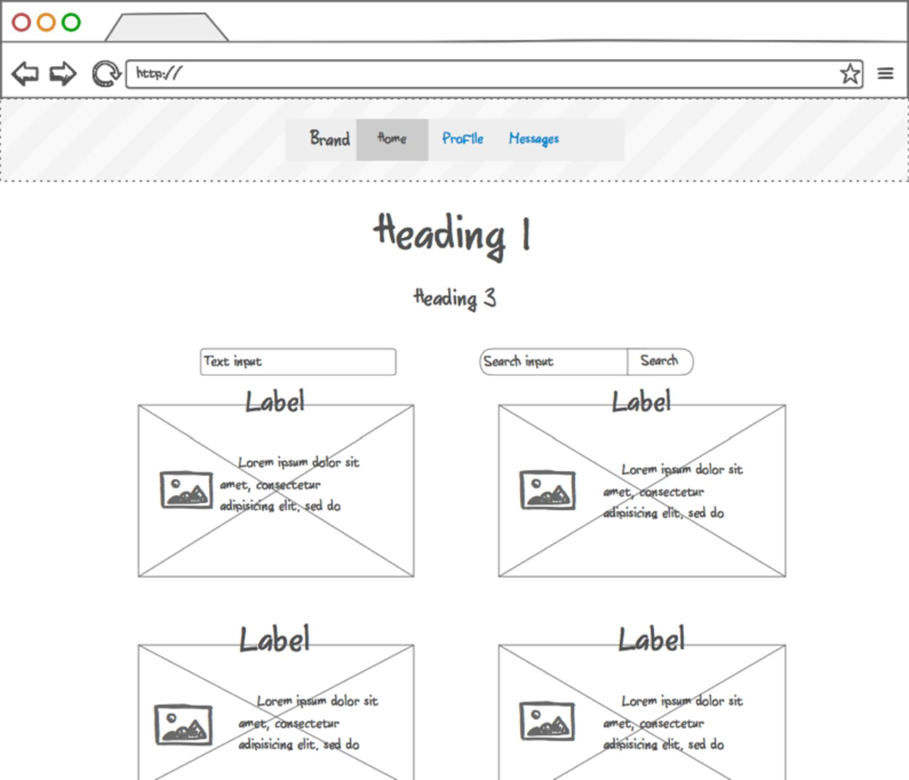

Branchout Overview
Are you looking to find something new that is near right now!? Well look no longer; BranchOut has been created just for you! BranchOut is a system that connects users to events that they are actually interested in
Meet our Team
Erik Gabrielsen - A Neo-Shakespearean Poet prodigy, young Erik arrive to America in February 1994 with only his clothes and a dream. A dream of changing the world though his crafted and beautiful words. With a passion in his heart, and a pep in his step, Erik took the nation by storm. Soon people from coast to coast knew of his voice, for it flowed with the power and depth of river after the spring melt. Yet, as his acclaim rose, Erik found himself desiring truth. A truth that lasted longer than the cries of adoring fans. On March 21st, 2005, Erik’s life blossomed when he found Graphical User Interfaces. It was clear to him that in GUI, he had found something honest and good. He found his direction. Since that day, Erik has pursued an understanding of GUI with his whole heart.
Quincy Schurr - Many moons ago, a story was foretold of a child. In a time of great need, with the world in darkness, this child would be the light. She would be protection to a nation, a people, neigh… a species. For when the world was most in trouble, a girl would arrive. With eyes like diamonds and a mind so powerful, none but the strongest could hope for safe harbor from her might. With age, the raw skills of Quincy were honed with wisdom and truth. She stood against corruption, darkness, and fear. Her voice was a mighty thunder from which none hide.

Jake Osselear - Jake finds beauty in the small things, the tiniest of flowers, a beautiful voice upon the wind, or the faintest kiss of sunshine on a summer’s day. He particularly delights in the song that flows from a heart full of good things, joy and love. Which is how he and Erik Gabrielson first became friends, for both had an appreciation of such things. Most days, you can find Jake tending to his garden. His care for the life all around is clear, and the earth blooms with his very touch. While other gardeners might grow two crops of potatoes in a season, Jake could easily grow five or more. Winter freezes only make his apples sweet, and blue bonnets even brighter. In all things, Jake’s care and focus result in good things. His family is beautiful. His home a place of joy. The world loves Jake, and treasures his every step.

Alyssa Rahman - If you were looking for the finest fiddle player south of the Mississippi, well you just couldn’t get away from the name of Alyssa Rahman. Why she must have been to every honky tonk and family get-together this side of the Nile. It might be just a wive’s tale, but it’s been told that when she played, you could hear the stompin’ of the angels’ feet. For even the Heavens up above enjoyed listening to her play. If you were watchin’ her, well you couldn’t even see her fingers. They were just flyin’ too darn fast. By the time she made her way on down to Texas, her song was the sweetest of wines on the most beautiful of days. Granted she’s a fair hand at about anything she sets her mind to. I heard she could crack the finest safe in under a minute, or make an apple pie so spicy sweet you’d think heaven had come to earth.
Daniel Peck - Daniel Peck is not a role model. Well at least for good, honest folk like you or me. However if you lived life on the darker side, you might look up to him. If you’re the type of man that thinks right and wrong are relative to your own ends, well then Daniel might be a good role model. In the late 1800’s, the towns of the American West lived in fear of Daniel Peck, or as he styled himself, Pistol Peck. Folk would know he had arrived in town by his signature, three resounding shots at dusk, right when the sun touched the horizon. When he came to town, families wouldn’t leave their home. The sheriff would often lock himself inside his own cell, just to let Pistol Peck know that he’d be no trouble. Even his name set folks on edge. That was his power. He was fear and pain crafted into human form.
Eileen Guo - More formally, you would know her as Dr. Guo. However, it’s possible you’ve never heard of Eileen Guo. Yet, of all the team members of BranchOut, we should be most thankful for Dr. Guo. She had no final battle, no single moment of glory or fame. No these things were not for her. The history books might lose her name except for the small fact that owe our survival as a species to her work. Due to her founding of the Demeter Initiative, we outlived the Sullen Seventy, the years that followed our near apocalyptic third world war. Due to her understanding of CRISPR genome editing, she crafted plants that could blossom in minimal sunlight. From basic starches, to oxygen giving algae, Dr. Guo made life on Earth possible again. Against all odds, she saved us from ourselves.
Andrew Timmins - Until the age of sixteen, Andrew had never met a human. Whoever his family was, they left him deep within the amazon jungle as a baby swaddled in canvas. While certainly close to death, Andrew was rescued by his adopted mother, the panther Tui-Stasa. For the next fifteen years, Andrew lived with his adopted family. He learned to speak not only the language of the Panther, but also of the Barracuda, Serpent, and Anteater. He learned the philosophy of Sloth and the Toucan. On his sixteenth birthday, he ventured from his home to the world beyond the forest. Since then, he has traveled the world, learning the ways of man, and working to better represent the needs of the jungle animals.
Inspiration for Branchout
While attempting to find entertainment on a Friday, the members of the Dynamic Alligators discovered a terrible problem. The were unable to finds any activities that they were interested in. When they looked on Facebook to find fun events, they only found things that mutual friends were hosting or attending. Disheartened by the situation, the team began to brainstorm on a solution which would allow them to find fun activities based on what they were interested in rather than by who they knew. After much thought, love, and a bit of angst, BranchOut was born. BranchOut is a system designed to connect users to fun and interesting things in their area. The Dynamic Alligators truly believe in the value and use of BranchOut, and hope that you will fall in love with it just as much as they have.
Technical Overview
What?
This is a multi-faceted event app that allows users to create and search communal events and also search a database of more well known events pulled from the Eventful API.
Who?
BranchOut is built for college students, recent college graduates, and people newly arrived to a new area. The system is designed to connect users with events they are really interested in and serves as a bridge from what you want to do, to what is available near you.
Major Features
- Search for events based on user specified criteria (activity, time, place, cost, etc.)
- Liking an event, effectively bookmarking it for later
- Real-time comparison of user location and event location
- Notifications of "starred" event changes
How is it implemented?
- Eventful API - used to pull event information
- Google Maps API - Used to find directions/show location of event
- Calendar thingy - A library that allows us to download calendar events/ create ics calendar files
Technologies used
- Data Access - MySQL database
- Web Service - RESTful API
- Presentation - HTML, CSS, Javascript
The Database
To Prevent from SQL injection we have put our Database deisgn in our presentation
For API Documentation click here
Development Process
Initial Goals
The initial goal of this project was to create a location based app that connected users with mutual interests through local, communal events while also giving users the option to search an assortment of more well-known events. It was created to fill the void between magazines and articles that publicized large events and facebook’s events that are relatively exclusive to those who are already friends by establishing a medium for people to find and publicize smaller, more personal functions to the greater community.
Features Implemented
- What was cut?
- The original dashboard or feed was supposed to consist of the combination of large events from eventBrite and user created events. However, we realized that eventBrite and user-created, communal events were like two categories/event types of their own and combining them could clutter results. For this reason, we decided to segregate the two and will consider adding the feature to show results combining the two in a later revision.
- Another small feature that we deemed unnecessary during development was the “Going” button. Originally we had intended to have a “Star” button and “Going” button, but we found that having the two buttons did not give the user any more information, rather it was slightly repetitive. Since the extra button did not contribute any informational benefit for users, we decided to remove it to simplify the user interface.
- What was added?
- An addition that arose during development was quick and easy calendar integration from the app. Users can easily transfer all of their starred events to their personal calendar making it easier for them to keep track of events without having to be actively on the app.
- Another feature that we decided to add was event notifications. Once a user has shown interest in an event by starring it, the user will be notified about any changes that are made to the event by the creator when they open or are actively using the app. This ensures that the users will always be up to date with the latest changes to their favorite events.
Initial Designs for website and app

Paper Prototypes
Technical and Team Hurdles
- JAVASCRIPT - asynchronous calls got in the way of everything.
- Android emulators
Aim for v2.0 release
- Add additional sorting options
- Add ability to share events to social media
- Ability to import facebook events
- Follow Users